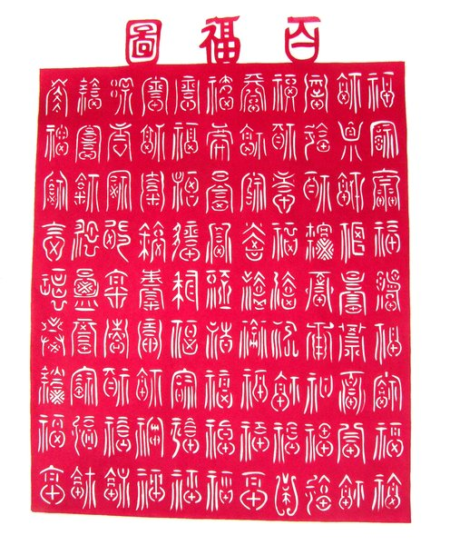
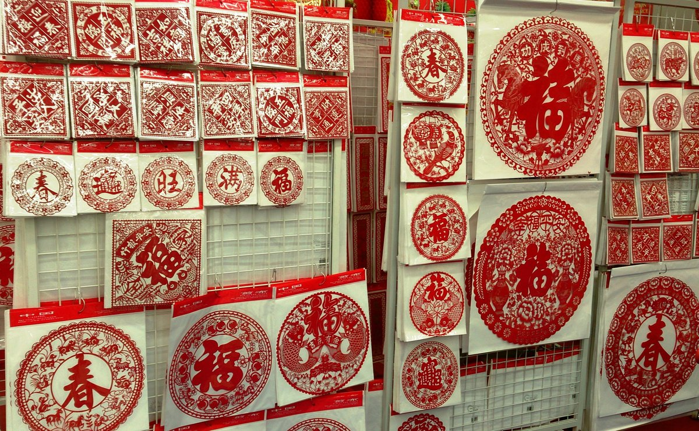

一纸千年
非遗剪纸文化互动体验
一把剪刀 一张红纸 剪出千年民俗记忆
何为剪纸
民间艺术瑰宝
剪纸是中国民间美术中最具代表性的艺术形式之一，用剪刀或刻刀在纸上剪刻花纹，用于装点生活、配合民俗活动。
融入日常生活
逢年过节、婚丧嫁娶、生子祝寿，剪纸无处不在。窗花、门笺、灯花、喜花……一张红纸承载着对团圆、幸福与美好生活的祝愿。
世界非遗
2009年，中国剪纸被列入联合国教科文组织"人类非物质文化遗产代表作名录"，成为世界公认的文化瑰宝。
一纸千年
从民间节俗到非遗保护，剪纸穿越千年生活现场
纸张普及，剪刻艺术萌芽。新疆吐鲁番出土的北朝团花剪纸，是现存最早的剪纸实物。
剪纸广泛用于节庆民俗。宋代已出现专业剪纸艺人，剪纸用于陶瓷贴花、蓝印花布等工艺。
窗花、礼俗剪纸达到鼎盛。剪纸与刺绣、皮影、灯彩结合，形成丰富多样的民间艺术形态。
剪纸成为非遗保护对象。各地剪纸传承人被认定，剪纸艺术进入博物馆、美术馆和学术研究领域。
剪纸进入文创设计、数字传播与时尚领域。传统技艺与当代审美融合，让非遗焕发新活力。
纹样有语
每一种纹样都有它的故事 · 点击卡片翻转查看寓意

福字纹福气临门、吉祥如意。春节贴"福"字是中国人最重要的年俗之一，寓意新的一年福运亨通。
清雅高洁、和美团圆。莲花出淤泥而不染，是纯洁与美好的象征，常见于婚庆剪纸。
"鱼"谐音"余"，寓意年年有余。鱼纹剪纸常用于春节和丰收庆典，表达对富足生活的期盼。
石榴多籽，寓意多子多福、家族兴旺。常用于婚庆剪纸和生育礼俗，表达对家庭美满的祝福。
蝴蝶成双，象征美好爱情与婚姻美满。"蝶"谐音"耋"，也寓意长寿安康。
十二生肖是中国人纪岁的方式。生肖剪纸祈福纳祥，每年春节对应生肖的剪纸格外受欢迎。
一剪一刻
剪纸看似简单，却讲究构图、线条与节奏
构思图案
根据用途和寓意设计图案。窗花、喜花、礼花各有讲究，构图讲求饱满、对称与留白。
折纸
将纸张对折或多层折叠，不同的折叠方式产生不同的对称图案。对折得两面对称，多层折得出团花。
描样
在折叠好的纸上用铅笔描出图案轮廓。熟练艺人可直接下剪，初学者需先描样再剪。
剪刻
用剪刀或刻刀沿描线剪刻。阳刻保留线条、去空白；阴刻去线条、留块面。两种技法常结合使用。
展开
小心展开折叠的纸张，完整图案显现。这一刻最令人期待——一张纸的华丽变身。
装裱
将剪好的作品粘贴或装裱。窗花可直接贴于窗上，精品则装入镜框或册页长期保存。
拼一朵窗花
拖动四瓣剪纸碎片到圆形窗框中，拼出完整窗花
揭开纸上花
用手指擦除遮罩，发现隐藏的剪纸图案

南北各有风骨
一方水土养一方剪纸
陕西剪纸
古朴粗犷陕西剪纸保留了汉唐雄风，造型古朴大气，线条粗犷有力。陕北剪纸以安塞、延川为代表，充满黄土高原的生活气息，题材多为农耕、放牧、节庆场景，是中国北方剪纸的典型代表。
剪纸小考
测测你对剪纸文化的了解
剪出你的祝福
输入祝福语，生成专属剪纸祝福卡
万事如意
送给最好的朋友
让非遗走向未来
剪纸不仅是装饰，更承载着民俗记忆。非遗保护需要传承人、学校、社区与数字技术共同参与。
传承
▾国家级非遗代表性传承人将技艺口传心授给下一代。各地设立剪纸传习所，让老手艺在年轻人手中延续。学习剪纸不仅学技法，更是学文化、学耐心、学审美。
创新
▾当代设计师将剪纸元素融入时装、包装、文创产品。数字剪纸、动态剪纸让传统纹样以新的方式传播。创新不是抛弃传统，而是让传统活在当下。
传播
▾短视频平台上剪纸教程广受欢迎，博物馆推出剪纸互动展览，年轻人用社交媒体分享自己的剪纸作品。每一次传播都是一次文化种子的播撒。
保护
▾数字化存档让剪纸纹样永久保存，学术研究为剪纸艺术建立理论体系，法律法规为非遗传承提供制度保障。保护不是封存，而是让文化持续生长。
一纸传千年
一把剪刀，一张红纸，
剪出的是窗前春意，也是千年民俗的温度。
愿传统文化在每一次触摸、每一次分享中继续生长。
扫码体验完整作品
长按识别二维码，分享给朋友
《一纸千年》非遗剪纸文化互动 H5
用代码传承文化之美